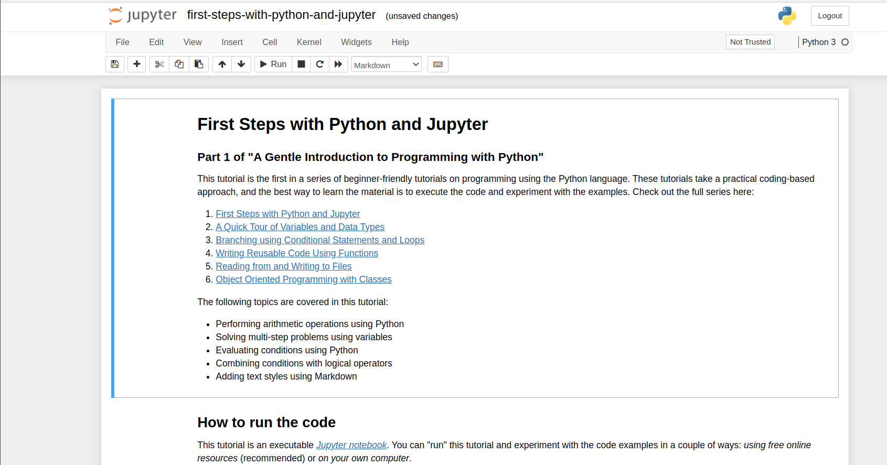

Week3: Setup ML Container
- The l4t-ml docker image contains TensorFlow, PyTorch, JupyterLab, and other popular ML and data science frameworks such as scikit-learn, scipy, and Pandas pre-installed in a Python 3 environment. You can find all information in NVIDIA L4T ML
Machine Learning Container
- The l4t-ml docker image contains TensorFlow, PyTorch, JupyterLab, and other popular ML and data science frameworks such as scikit-learn, scipy, and Pandas pre-installed in a Python 3.6 environment
- Latest
l4t-ml:r32.6.1-py3- TensorFlow 1.15.5
- PyTorch v1.9.0
- torchvision v0.10.0
- torchaudio v0.9.0
- onnx 1.8.0
- CuPy 9.2.0
- numpy 1.19.5
- numba 0.53.1
- OpenCV 4.5.0 (with CUDA)
- pandas 1.1.5
- scipy 1.5.4
- scikit-learn 0.23.2
- JupyterLab 2.2.9
- Latest
Running the Container on your Jetson-Nano
- First pull one of the l4t-ml container:
nano@jetson-nano:~$ sudo docker pull nvcr.io/nvidia/l4t-ml:r32.6.1-py3
....
- Then to start an interactive session in the container, run the following command:
nano@jetson-nano:~$ sudo docker run -it --gpus all -e DISPLAY=:0 -v /tmp/.X11-unix:/tmp/.X11-unix --network host nvcr.io/nvidia/l4t-ml:r32.6.1-py3
Mounting Directories
- To mount scripts, data, ect. from your Jetson's filesystem to run inside the container, use Docker's -v flag when starting your Docker instance:
nano@jetson-nano:~$ sudo docker run -it --rm --runtime nvidia --network host -v /home/user/project:/location/in/container nvcr.io/nvidia/l4t-ml:r32.6.1-py3
- Note that you should change the path directories and adapt to your installation:
-vflag adds the mecanism to share a folder between host and docker image running, the path "/home/user/project" corresponds to host path (adapt to your installation "/home/nano/l4t-ml-data"), and "/location/in/container" corresponds to docker path (you could change to "/home/l4t-ml-data") - Now, you should then be able to start a Python3 interpreter
Connecting to JupyterLab Server
- A JupyterLab server instance is automatically started along with the container.
- You can connect http://localhost:8888 (or substitute the IP address of your Jetson device)
- Password: nvidia

Assignment 1
Run the Jupyter Notebook on Jetson Nano. You can look for more information about how to use the Jupyter-Notebook
Please send a message to the professor as soon as you finished
Assignment 2
Try to follow the examples of First Steps of Jupyter and Python on your Jetson Nano.
Please send a message to the professor as soon as you finished